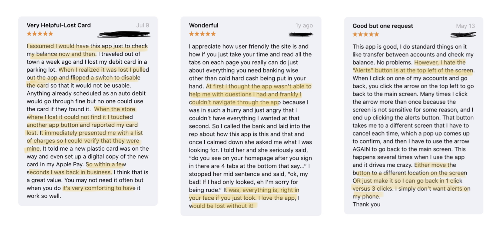
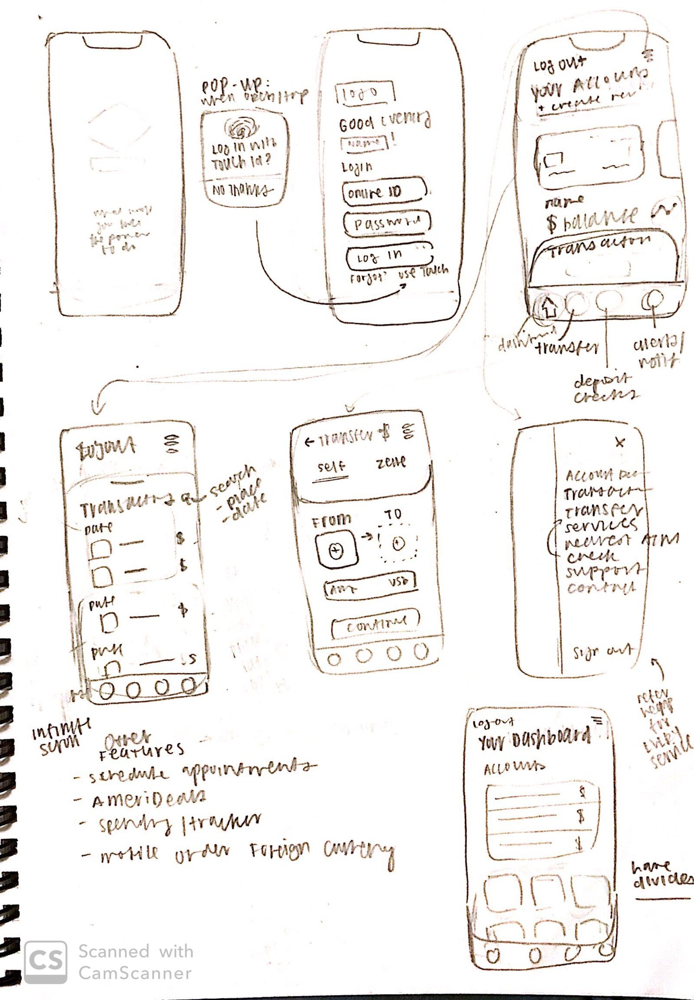
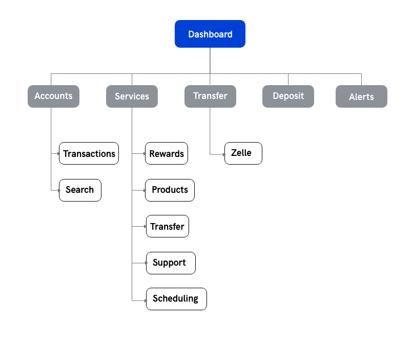
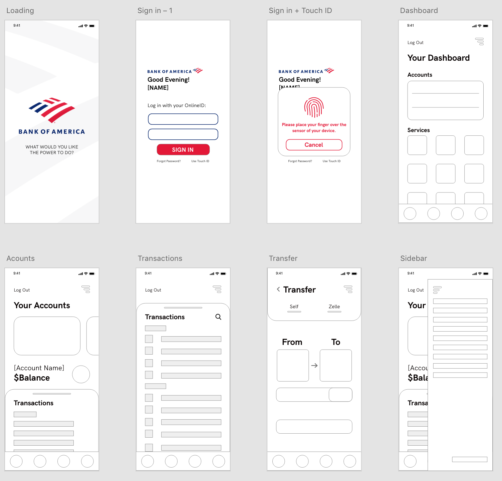
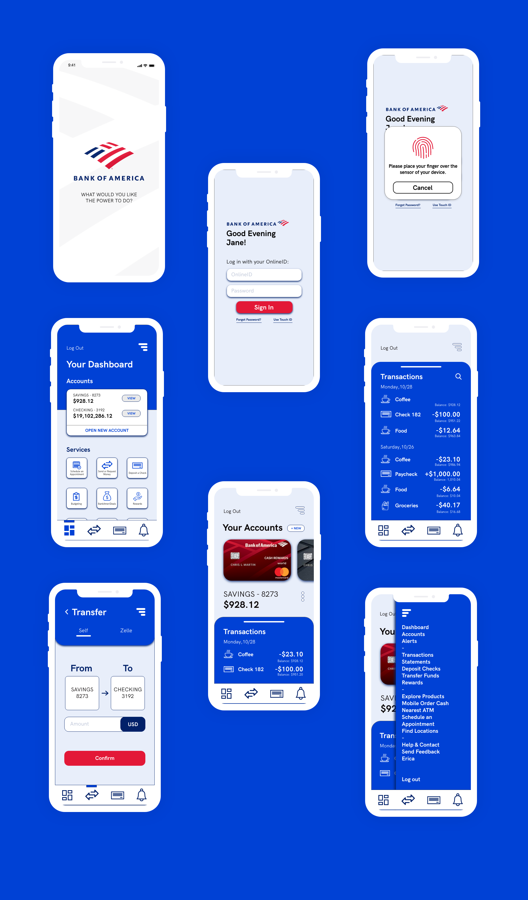

Banking apps are super useful and convenient for customers. Common features include easy access to statements and depositing checks without having to wait in a line. However, a problem arises when such features are difficult to find within the app and go unnoticed.
From personal experience, I found the BOA mobile banking app difficult to navigate when it came to less central features, so I redesigned it.
Bank of America’s mobile banking app has many hidden features/services that customers could find useful, but have difficulty actually finding due to its design. Not only does this result in a less than optimal UX, it's a missed business opportunity:
- Users don't notice the app's other features/BOA's other products and are unlikely to use them
- Not easy to find where to schedule an appointment or get customer support, which is important considering BOA's dedication to good customer experiences in real life.
Banking apps increases convenience, speed, flexibility and can also improve security if integrated with the device’s built-in security measures.
From a business standpoint, these apps improve the customer experience. In some cases they can be a cheaper and more efficient alternative to hiring more employees physically.
My goal for this redesign is to better ensure the app does that. Success metrics could be an increase in users, an increase in average review ratings, or more customers contacting BOA service lines through the app.
This was one of my weekly sprints that Innovative Design challenged me to do during Fall Semester in 2019. Given a short turnaround, I was unable to conduct more thorough user research, so I turned to the app’s reviews on the App Store. If I had the time, I would survey other BOA customers on their experiences to more accurately uncover pain points and generate more informative insights.
- Unoptimized Organization - Many users felt that the app had great features such as Bill Pay and raved about how they could do pretty much everything on the app, if they looked hard enough for it. The reality is though, not every user spends the time to read everything and explore every feature. Some commented that the UI makes each feature look like a distraction.
- Aesthetics and Feel - Users noted that the app’s UI felt basic and directionless but exceptional customer service over the phone did make up for it. A major part of this redesign was to make sure each design decision was intentional. Customers should not need to call support in order to use the app.
- Peace of Mind - The app’s easy access to support quickly calmed customers who lost their card or had their account breached. Money is extremely important to most people who will freak out if something goes wrong. In addition, the app provides easy of access when checking on accounts in times of suspicion, which in turn provides peace of mind.
How might we streamline crucial interactions that ensure customers find what they need?
- Streamline - Increase ease of access and clarity of currently hidden features.
- Centralize - Concentrate pertinent interactions and information into a singular dashboard.
- Update - Bring app aesthetics up to speed with current visual trends and patterns.
 


Accounts - For those with multiple accounts, it could get confusing going just by account numbers, so I wanted to create additional visuals for easy recognition. A representation of an account in real life is the credit/debit card tied to it. Customers are more likely to recognize which account is which by seeing the card they use in real life.
Transactions - A transaction history is useful information when one cannot remember how much an item was for example, or to potentially catch fraudulent charges. However, transactions can get buried, adding an ability to search for specific transactions remedies that.
Dashboard - The original dashboard was hidden away. Smaller icons and more icons per row will provide a broader overview of the app. In addition, the hamburger menu opens up to a list view of the dashboard so that each feature is represented and can be a place to see an overview easily (This was actually implemented in a later update!). The original dashboard was hidden away. A realization I had while reading the reviews was that the app’s easy access to support quickly calmed customers who lost their card or had their account breached, so I wanted to make said support as easy as possible to find.
As a user of the app itself, this sprint provided an opportunity to go through all the features myself and I was actually surprised by the sheer amount of things the app could do. Something I would love to see would be a better feature for budgeting (but that’s a project for another day). Bank of America is big on customer service and it was interesting to see how that carried over into their app with its easy access to support and myriad of services. I enjoyed this sprint but if I had more time, I would do more iterations after more research and testing since I didn’t consider specific use cases or personas.
Since this project, BOA has updated their app a number of times. A notable change would be the listing of all the features/products/services that the app provides under the hamburger like in this design! There is now an additional nav bar but at the top of the screen and includes accounts, dashboard, and products.